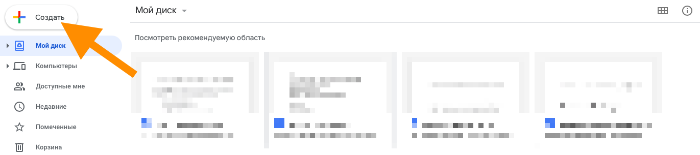
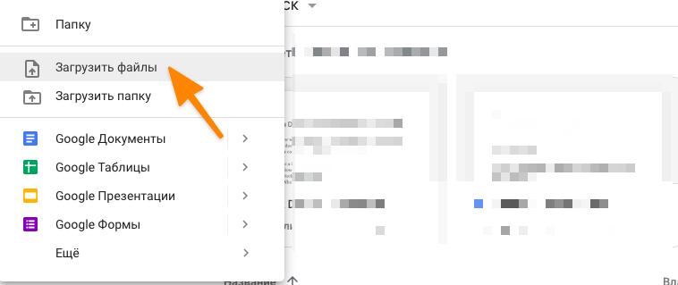
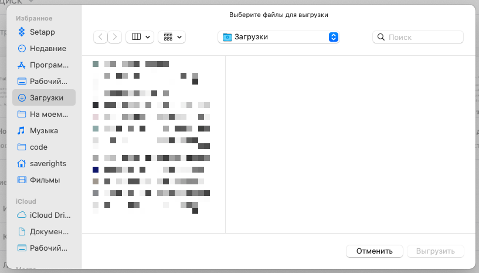

Загрузка и создание файлов
Чтобы отправить на диск уже существующий файл, нужно:
Открыть Google Диск.
Нажать на кнопку «Создать»:
Из выпавшего списка выбрать пункт «Загрузить файлы» или «Загрузить папку»:
Затем выбрать файл или папку, которую нужно загрузить в облачное хранилище:
Для создания файлов нужно проделать почти то же, только вместо пунктов «Загрузить файлы» или «Загрузить папку» надо выбрать одно из приложений Google Drive.
Часть приложений скрывается за кнопкой «Еще», а для доступа к Google Keep нужно напрямую заходить на официальный сайт заметочника.
Организация документов и папок
Процесс организации документов на Гугл Диске почти не отличается от аналогичного на локальном диске. Те же папки, те же инструменты, поддержка Drag & Drop для перемещения файлов с помощью мыши и т.п.
Чтобы закинуть файл в папку, нужно просто потянуть его на эту директорию. Чтобы переименовать файл или пометить его как избранный, нужно кликнуть по нему правой кнопкой мыши, а потом выбрать нужный пункт из контекстного меню.